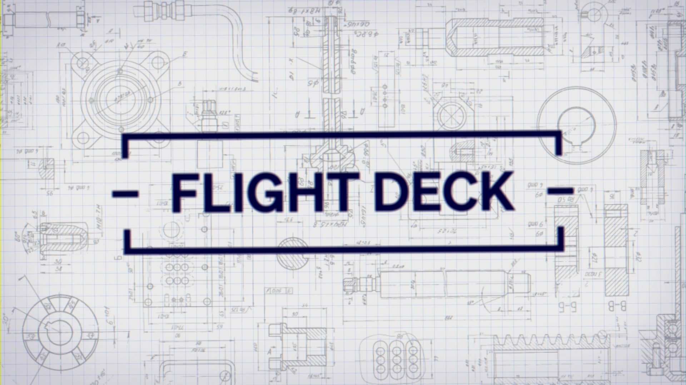

Experienced teams jump to their area type and find the right checklist and standard. New teams get a guided walk through the five S. Wingmate keeps the audit cadence.
Pick the area type that matches where you work. Every example, checklist, and standard then speaks your context. Choose one to see full detail, or compare all three side by side.
Five moves take a team from a cluttered area to a sustained standard. Each step has a short action, a worked example, the template it points to, and a small checklist. Check items off as you go.
Remove everything that is not needed for the work that happens in this area. When in doubt, red-tag it. A red tag is not a verdict — it is a question. The team decides within a set window, usually 48 hours.
Assign a permanent home to everything that stays. Label the location, not just the item. Anyone entering the area should be able to find what they need and return it without asking.
Clean the area and inspect it as you clean. Shine is not housekeeping. It is a systematic inspection for leaks, wear, damage, and abnormalities that would otherwise hide until they become failures.
Make the first three S visible and permanent. A one-page standard with photos of the target condition is the test: anyone walking in should be able to see exactly what good looks like and check against it.
Audit on a cadence. A scored weekly audit against the standard is the mechanism that keeps 5S from fading. The score goes on the board. Trends matter more than any single result.
Wingmate is already in Flight Deck. Here it reduces the setup friction on 5S so the team spends time on the work, not the paperwork.
Describe your area and Wingmate points you to the floor, office, or lab checklist that fits.
At navigationShare photos of your area and Wingmate drafts the one-page visual standard with target condition notes.
At step 4Tell Wingmate your team rhythm and it sets the weekly audit schedule with reminders and a rotating auditor list.
At step 5Unsure whether to keep or remove an item? Wingmate walks through the decision criteria with your area context.
At step 1Four templates cover the full 5S cycle. The one marked for you matches the area you selected above. Need the rest? The full library is one click away.
Scored audit for production cells, assembly areas, and shop floors. Shadow boards, sort zones, shine schedule, and sustain cadence in one sheet.
Open template →Physical and digital 5S for transactional, engineering, and shared service teams. Covers desk standard, shared drive structure, and monthly audit walk.
Open template →Scored audit for test labs, metrology, and engineering benches. Instrument locations, consumable min/max, contamination zones, and weekly score.
Open template →Tracks every red-tagged item: description, location, reason, disposition date, and outcome. Used at Sort across all area types.
Open template →A walkthrough of the five S on the floor, showing the sort, shadow board setup, daily shine, standard posting, and first audit cycle at a real GE Aerospace production cell.

▶No. Cleaning is one of the five S — Shine — and even that is not primarily about cleanliness. Shine is a systematic inspection: cleaning is the method, finding abnormalities is the goal. The other four S address what stays in an area, where things live, what the standard looks like, and how to keep it. Together they create a workplace where problems become visible before they become failures.
The five S apply exactly the same way, but the targets are different. Sort means archiving or deleting files and clearing desk clutter, not removing unused fixtures. Set in order means a consistent shared drive structure and naming convention, not shadow boards. Shine means a regular review of the digital workspace for outdated documents and broken links. The discipline is identical; the surface it runs on is information instead of tools and materials.
Weekly for most production and lab areas. Monthly for office and shared service areas where the workspace changes more slowly. The cadence matters less than the consistency. A team that misses audits for two weeks will find that 5S has faded. Wingmate can set the schedule and send reminders so the audit runs without prompting.
A red tag is a physical or digital label placed on any item whose need in the area is uncertain. It is a question, not a verdict. Once tagged, the team has a defined window — typically 48 hours — to decide: keep, relocate, return to stock, or remove. Everything that stays gets a permanent home. Everything that leaves is logged in the Red Tag Log so the decision is visible and reversible if needed.